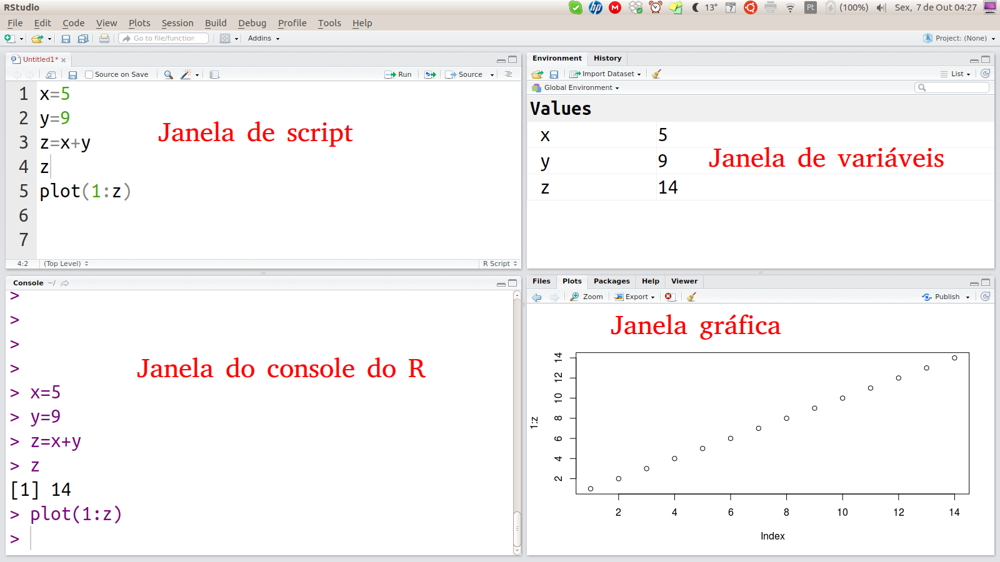

Cap. 2 Primeiros passos
2.1 Conhecendo o Rstudio
o Rstudio é dividido em quatro janelas:

A janela superior esquerda é um simples editor de texto que reconhece o código em R. Esta é a janela de scipts do Rstudio. Cada arquivo aberto pelo Rstudio é colocado numa nova aba dessa janela.
A janela inferior esquerda mostra o próprio R em ação. Se trata do console do R, que mostra o andamento do processamento do R e suas mensagens.
Os comandos da janela de scripts pode ser passados para o console do R usando Ctr+Enter ou pressionando o botão Run.
Atalhos do teclado interessantes:
| Atalho do techado | Ação |
|---|---|
| Ctrl+Enter | Enviar o código da linha atual para o console do R |
| Ctrl+O | Abrir um arquivo |
| Ctrl+PgUp | Aba de scritp anterior |
| Ctrl+PgDw | Aba de scritp seguinte |
| Ctrl+S | Salva o documento atual |